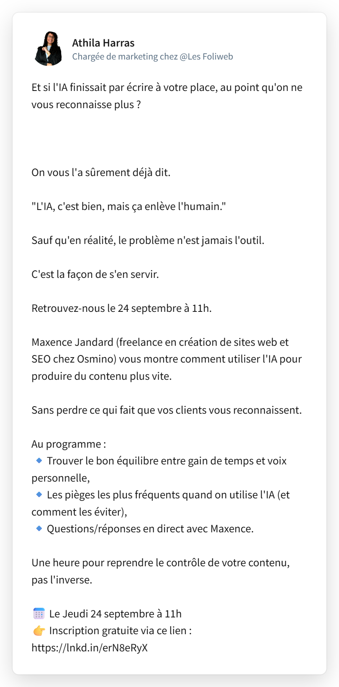

Découvrez les livrables réalisés autour de la stratégie de communication et de marketing automation du webinaire : « Créer du contenu avec l'IA sans perdre son authenticité »
Cette page rassemble les recommandations conçues dans le cadre de cette étude de cas.
Découvrir les livrablesLe webinaire « Créer du contenu avec l'IA sans perdre son authenticité » se tient le jeudi 24 septembre à 11h00, animé par Maxence Jandard, freelance, créateur de sites web, expert SEO et fondateur d'Osmino. L'objectif est d'aider les participants à s'approprier l'IA comme un outil de gain de temps, sans jamais sacrifier la voix et la personnalité de leur marque — dans l'esprit pédagogique, chaleureux et orienté passage à l'action des Foliweb.
Donner des méthodes concrètes pour produire du contenu assisté par l'IA, tout en gardant une écriture sincère et reconnaissable.
Entrepreneurs, indépendants et dirigeants de TPE/PME souhaitant gagner en efficacité digitale sans perdre leur singularité.
Un post pensé pour capter l'attention des entrepreneurs sur leur fil d'actualité et les inciter à s'inscrire, dans le ton chaleureux et accessible des Foliweb.

Aperçu de la vidéo telle qu'elle est programmée pour la publication du post.
De l'inscription à la relance des absents, chaque étape de la séquence email est déclenchée automatiquement selon un calendrier précis.
Test réalisé sur l'objet de l'email de confirmation, envoyé immédiatement après l'inscription au webinaire.
« Votre place est confirmée pour le webinaire IA du 24 septembre »
« C'est noté ! Rendez-vous le 24 septembre à 11h avec Maxence »
Formulation factuelle et rassurante, centrée sur la confirmation de l'action (l'inscription a bien été prise en compte). Elle répond directement à l'intention de recherche de l'inscrit juste après son inscription : vérifier que tout est en ordre. Le rappel de la date dans l'objet aide aussi au repérage visuel dans la boîte de réception si l'inscrit veut retrouver l'email plus tard.
Ton plus chaleureux et personnifié, cohérent avec la ligne éditoriale bienveillante et accessible des Foliweb. La mention du prénom de Maxence crée un lien humain dès le premier contact et prépare l'inscrit à retrouver ce nom dans les emails suivants (J-3 notamment). L'hypothèse ici est qu'un ton plus proche augmente la mémorisation de la marque, avec un effet positif sur l'engagement futur, sans nécessairement changer le taux d'ouverture (déjà élevé sur ce type d'email transactionnel).
Une présentation réalisée dans le cadre d'une étude de cas autour du webinaire Les Foliweb.